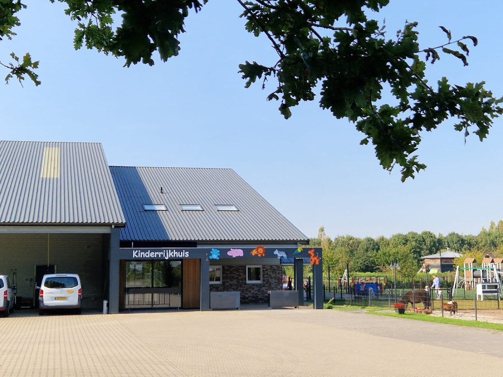
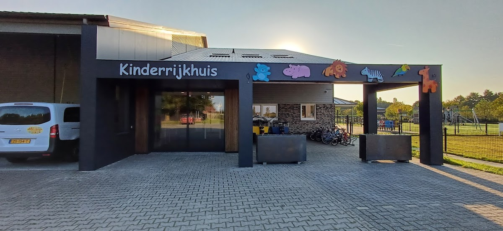
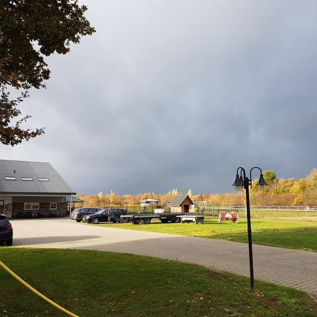
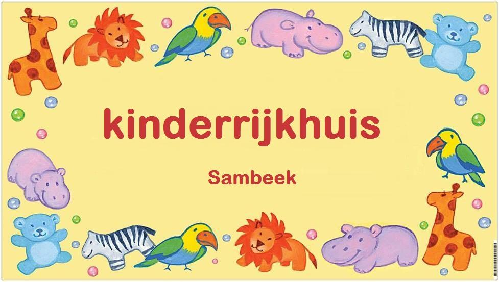

Flexibele kinderopvang en BSO in Sambeek voor kinderen van 0 tot 13 jaar. Met dierenweide, grote buitenspeelruimte en persoonlijke aandacht.
2000
Gestart als gastouder
0–13
Jaar oud welkom
5
Dagen per week open
🐐
Eigen dierenweide
Kinderrijkhuis is ontstaan uit de passie van Mieke, zorgen voor kinderen. In 2000 begon zij als oppasmoeder, later werd zij officieel gastouder in haar woonhuis. Door de goede verhalen van ouders werd het steeds drukker.
De stap richting een nieuwe droom werd gezet. Op 1 april 2014 opende Kinderrijkhuis de deuren van het mooie nieuwe gebouw. Dochter Nienke sloot zich aan, en later volgde dochter Dorien dezelfde passie.
Kinderrijkhuis is een VOF. Mieke, Nienke en Dorien Langen zijn hoofdverantwoordelijk en regelen het reilen en zeilen.

Particuliere dagopvang voor kinderen van 0 tot 13 jaar, met vaste pedagogisch medewerkers en veel aandacht voor elk kind.
Twee speelruimtes ingericht voor de kleinsten. Vaste pedagogisch medewerkers verzorgen de kindjes zoveel mogelijk in het thuisritme. Ieder kind slaapt alleen op een eigen slaapkamertje.
Voorbereiding op de basisschool. Veel aandacht voor groepsactiviteiten. Peuters worden uitgedaagd door diversiteit aan activiteiten: samenwerken, ontdekken en ervaren.
Kinderen worden naar school gebracht en opgehaald. Na schooltijd vrij om te ontspannen: buiten voetballen, klimmen, of rustig lezen. Pedagogisch medewerkers bieden uitdagende activiteiten.



Een grote buitenspeelruimte waar kinderen veilig kunnen spelen. Het grote grasveld met klimrekken biedt uitdaging voor alle leeftijden. De omliggende ontdektuin zorgt ervoor dat kinderen op ontdekking gaan in de natuur.
De dierenweide is de plek waar kinderen ongedwongen en veilig in contact komen met dieren. Ze mogen helpen met de verzorging van geitjes, schaapjes, koeien, de pony en hangbuikzwijntjes.
Bij Kinderrijkhuis betaalt u alleen voor de uren die u daadwerkelijk gebruikt. Facturatie per kwartier. Ouders reserveren zelf de opvangtijden die nodig zijn — vast of flexibel.
Elke week dezelfde dagen en uren. Gereserveerd in de planning voor uw kind.
Uiterlijk 4 weken vooraf doorgeven. Ideaal voor ouders die flexibel werken.
Benieuwd naar Kinderrijkhuis? Neem contact op voor een rondleiding of meer informatie over onze opvang.